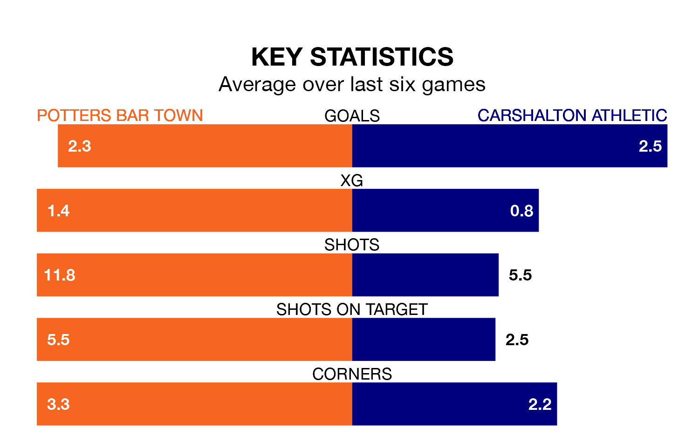

Carshalton Athletic travel to Potters Bar Town on late Tuesday in Isthmian Premier Division.
The visitors come into the game on the back of a defeat in their last match, having lost to Cray Wanderers 2-1 at home.
Potters Bar, meanwhile, won their last match, 4-3 against Concord Rangers.
With 53 goals in 28 games so far this season, Carshalton are scoring more than average in the league with 1.9 goals per game. And they are conceding fewer than average, letting in 43 goals at a rate of 1.5 per game.
Potters Bar, meanwhile, are average scorers, with 1.6 goals per game. They have conceded 1.7 goals per game.
In the last 10 years, Potters Bar and Carshalton have played each other on 10 occasions. Potters Bar won three of them and Carshalton seven.
On average, Potters Bar scored 1.2 goals and Carshalton 2.5 in those matches.
Their last meeting was on August 12, when Carshalton won 5-0 at home.
Athletic are eighth in the table after 28 games, of which they have won 12 and drawn six, earning 42 points.
Town are six places behind the visitors in 14th, with nine wins and six draws putting them on 33 points.
The home side are in mixed form in Isthmian Premier Division, with three wins and three losses from their last six games.
With three wins and two draws over that period, Carshalton's form is slightly better – they have taken 11 points from 18, compared to Potters Bar's nine.
Updated: 13:52 (UTC), 05/02/24